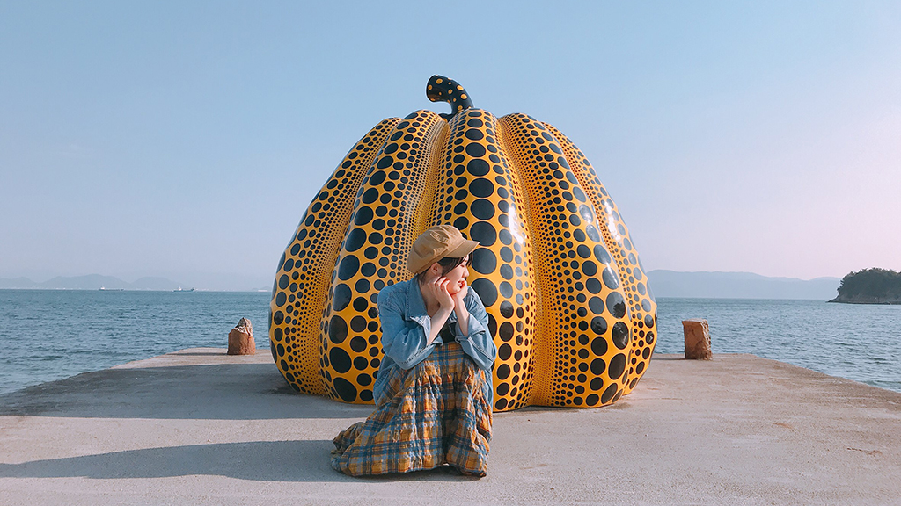
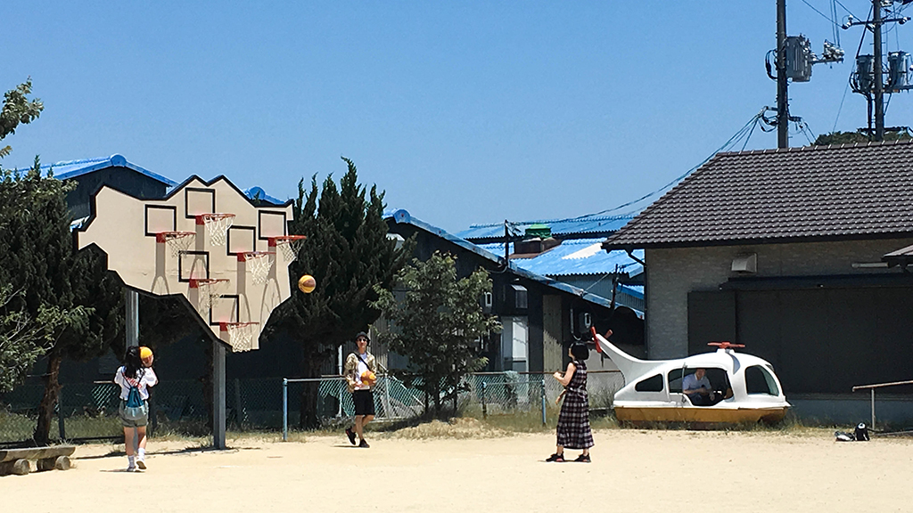
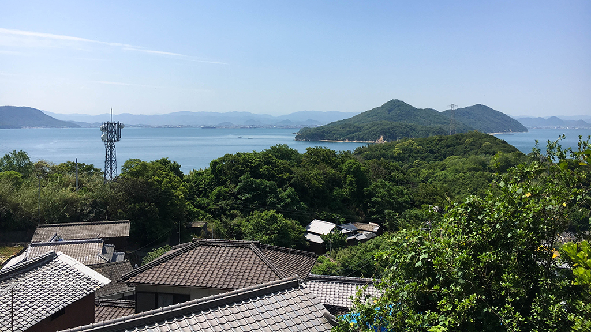

位在瀨戶內海的各個島嶼
坐落在瀨戶內海的島嶼有以「日本地中海」最著名的小豆島，以及藝術聖地直島、豐島，讓人感受到最純粹島民生活的男木島、女木島等等。
小豆島
被稱作「日本地中海」的小豆島，有著十分怡人的天氣，其中必踩的景點－天使之路，據說戀人牽著手走到沙洲正中央。感情會長長久久。另外，還可以品嘗小豆島特產－橄欖所做成的冰淇淋，視覺跟味覺同時得到最高的享受！

直島
騎著自行車在小巷、山間穿梭，安排一場親近大自然的旅程吧。想走藝文路線的遊客們，絕不能錯過當地最厲害的「地中美術館」，以及草間彌生最著名的南瓜裝置藝術。結束了一天的行程，可以到知名的「 I LOVE 湯」體驗日式傳統澡堂！

豐島
以藝術聞名的豐島有一座「豐島美術館」，雖小巧但相當適合沉澱心靈，感受最接近大自然的生命流動。到「心臟音資料館」把自己的心跳聲錄製下來，作為永久保存，十分具有意義。這座島，幫助我們在繁忙生活中，找回最原始的自己。

男女木島
男木島及女木島為獨立的島嶼，由於兩座島的距離近，若規劃遊玩的時間有限，是瀨戶內跳島的 No.1 首選！當地島民大多為老年人，人口外移嚴重，所以近期開始有著「歡迎入島」的口號。島上的流浪貓相當多，隱藏在男木島的巷子中，有一戶島民爺爺積極向旅客推廣『TNR』的觀念，宣導的同時，也提供旅客免費章魚燒的休憩站，歡迎旅客自由樂捐幫助流浪貓，說不定你也會遇到唷！而女木島又稱作桃太郎中的「鬼島」，可以在各處看到石頭惡鬼，相當可愛。